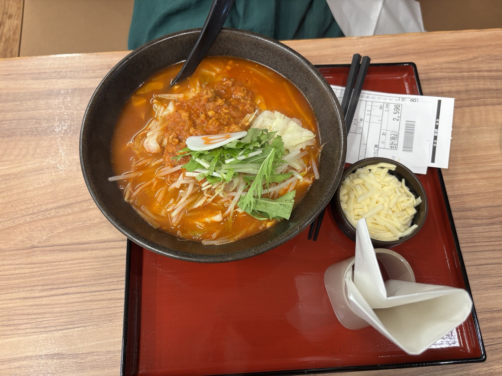
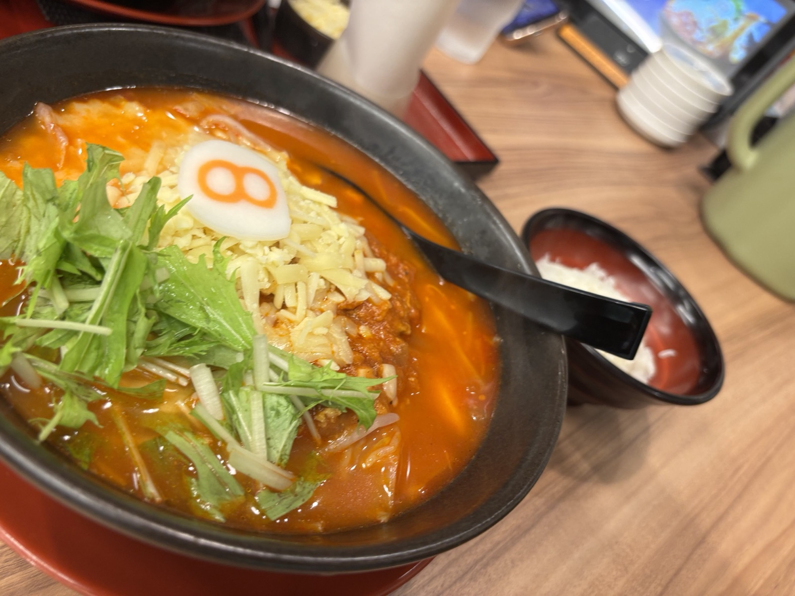
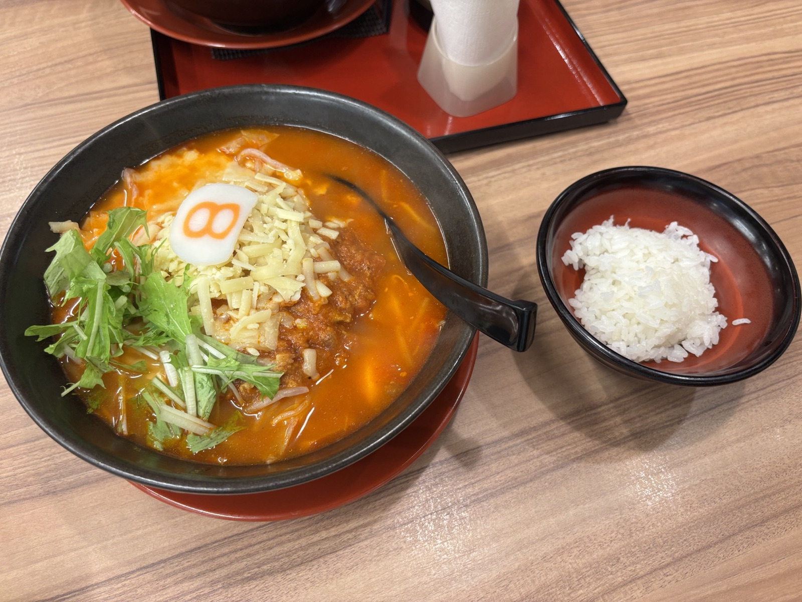
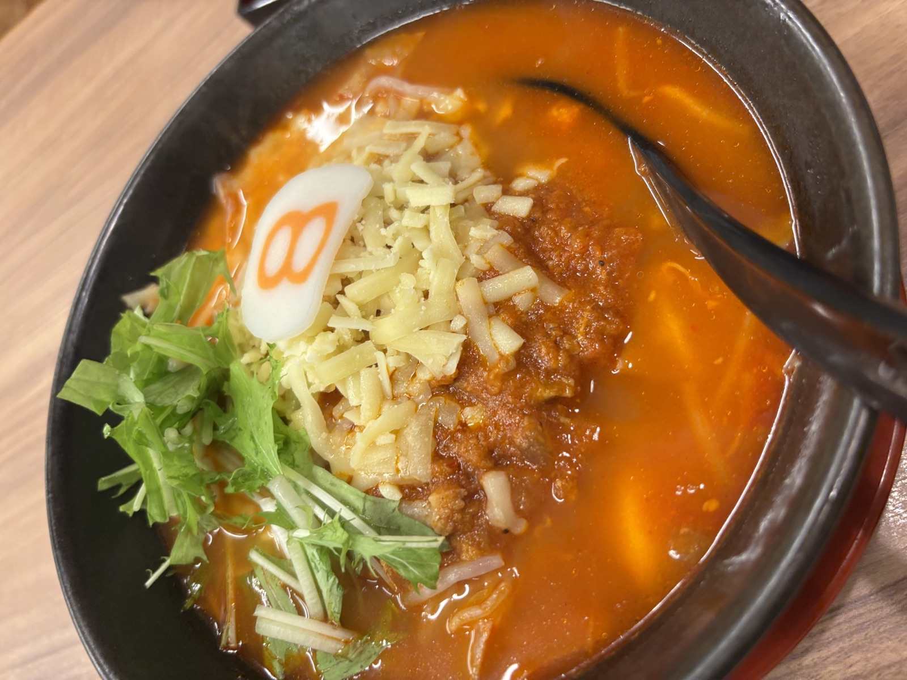
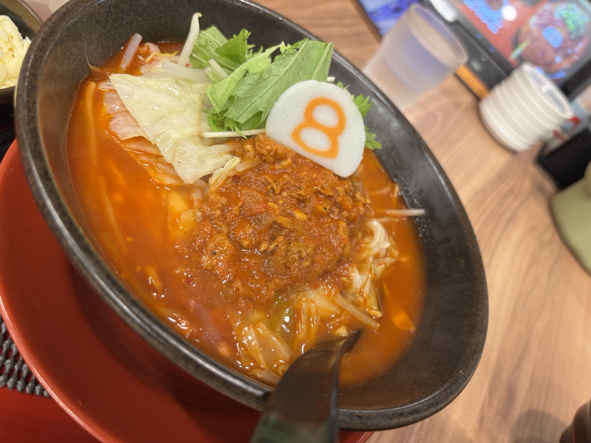
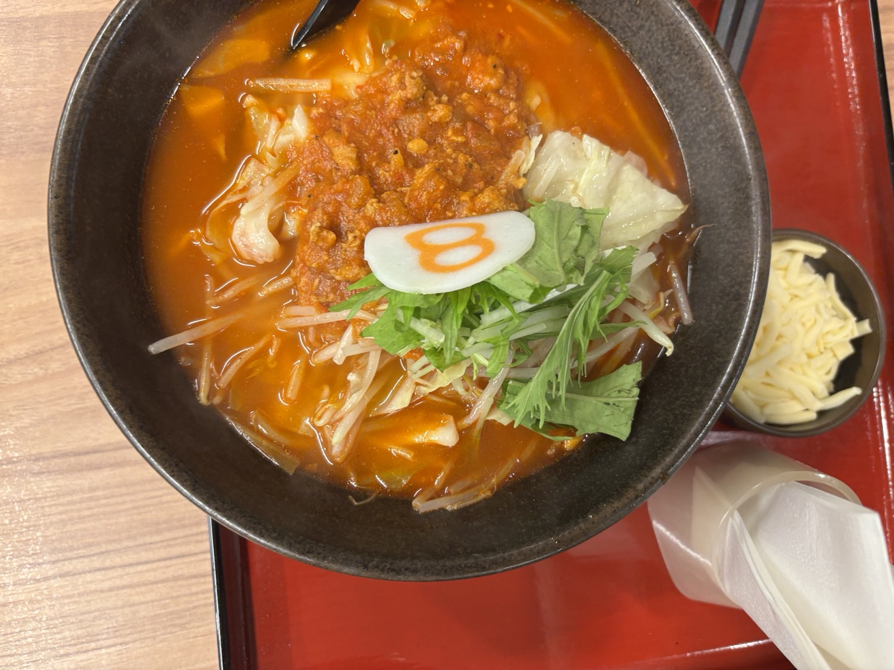

野菜どっさり、いつもの一杯に会いに行く。

石川生まれのソウルラーメン「8番らーめん」。松任店では、野菜をたっぷり乗せた炒め野菜らーめんはもちろん、トマトの酸味が効いた季節限定の「野菜トマトらーめん」も人気です。チーズをまみれさせるトッピングで、辛味と酸味とコクが一気に濃厚に変わるのも松任店ならではの楽しみ方。
大盛り無料・トッピング豊富・ドライブスルーあり





| 名前 | 8番らーめん 松任店 |
|---|---|
| 場所 | 石川県白山市徳丸町682 |
| 営業時間 | 10:30〜22:00（L.O.21:30）年中無休 |
| 公式サイト | hachiban.jp（公式店舗ページ） |